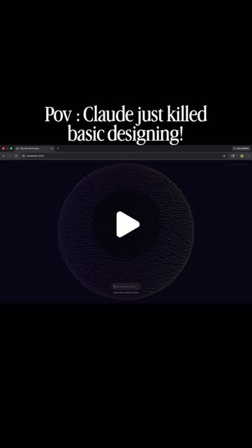
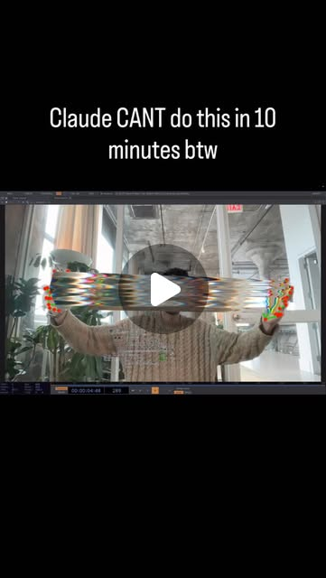
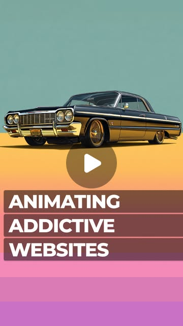
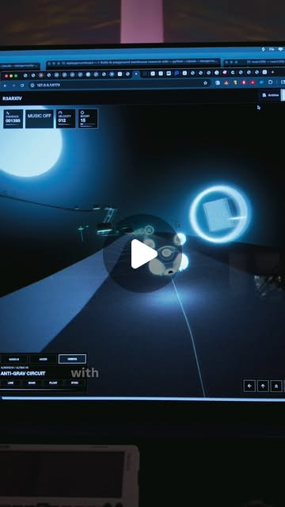
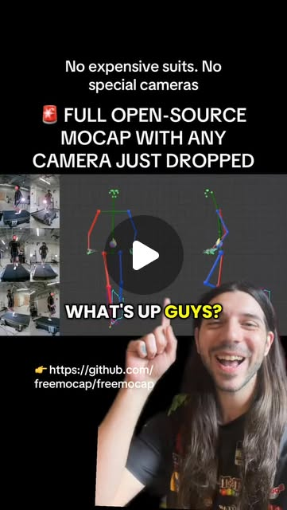
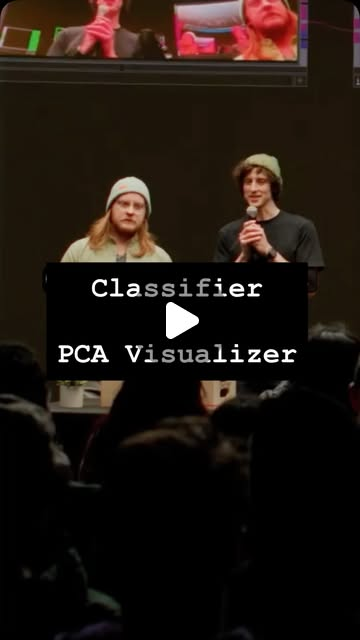
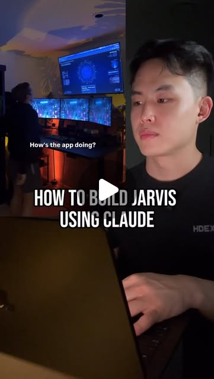
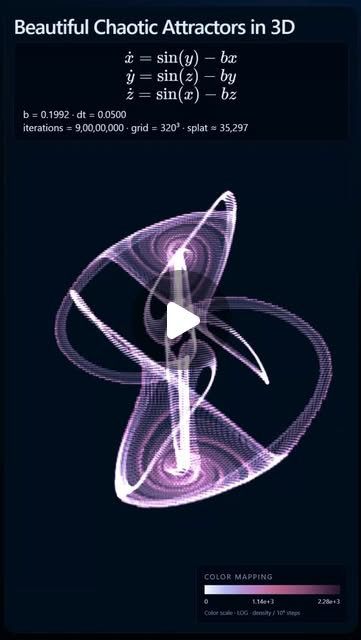
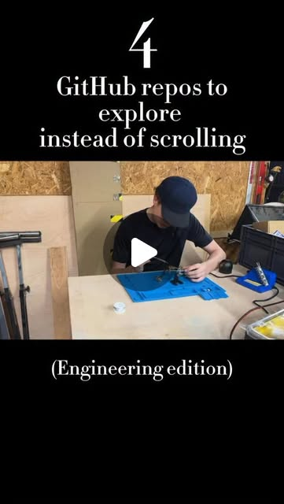
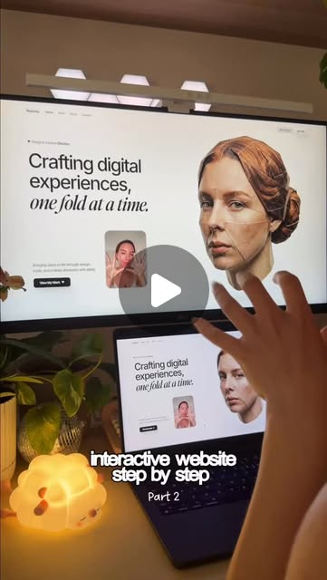

The One-Person Studio: Creative Tech Stack That Replaces a Team
Try It — Action Sketch
1. Concept: Claude Code for rapid prototyping + ideation 2. 3D: Blender + motion capture via MediaPipe (500+ landmarks/frame) 3. Video: AI generation via Veo/Kling/Pika for b-roll and effects 4. Interactive: React/Three.js for browser-based 3D experiences 5. Music: AI-assisted composition + Audacity for post-production 6. Ship: Cursor for polishing the final interactive site 7. Distribution: Direct-to-audience, no gatekeepers needed
Connected Posts (23)



















Prompt system — run this yourself
Pasteable into Claude Code, Claude, or any agent. One-shot for the whole result, step prompts when you want to steer. Every step carries its own audit; the gap audit makes the agent find and fill what it missed.
Mission. Ship one complete creative artifact end to end as a one-person studio: an interactive 3D web experience (or a generative/motion piece) built through the full stack - Claude Code/Cursor for the build, a reusable reference library or design system for the agent, MediaPipe/FreeMoCap or AI video where relevant, Three.js/React for delivery. Done means it is live on a public URL, loads and runs on a mid-range phone, was built with an agent driving from a committed design system, and a second person can open and interact with it.
1 · Deeper, not bigger
- What a top professional would do (that you didn't ask for): A one-person studio that actually ships does not 'ask Claude to make a cool 3D site'. Like rndyrbrts, they build the library and the design system FIRST, then build the thing: a committed reference archive (rndyrbrts' R3ARXIV of 560+ React-Three-Fiber/Three.js resources turned into an agent skill) and a written design system that extracts the meta from a moodboard (palette behaviour, layout pressure, motion, density, texture, interface logic, emotional tone) so the agent generates on-brand output repeatably and the parameters become art-direction controls. They expose parameters as macros, make it audio- or input-reactive deliberately, and test on real devices. ojrgb's caution applies: respect the depth of the craft, don't ship a caricature.
- Rawest material to start from: rndyrbrts' workflow (moodboard -> extract tags/signal/structure/palette -> liminal atlas manifest, one row per artifact -> LLM steered by a written philosophy generates live HTML/canvas); the React-Three-Fiber and Three.js docs and a self-assembled reference archive like R3ARXIV turned into a skill; FreeMoCap (github.com/freemocap/freemocap, 500+ landmarks/frame, exports to Blender/Unity/Unreal) for motion; MediaPipe for input interaction; a real moodboard you assemble (screenshots, links, winners, rejects, and one sentence per reference on why it matters).
- Methods and tools: Claude Code or Cursor as the build agent; a committed design-system markdown (the agent's contract: goal, context=the archive, constraints, proof) plus a reference-archive skill; React + React-Three-Fiber/Three.js for the interactive web layer; a parametric control layer exposing art-direction macros (including audio-to-visual mappings); MediaPipe or FreeMoCap where the piece is body-reactive; Vercel or similar for the public deploy; Lighthouse and real-device testing for the mobile bar.
- What proves it right: A public URL that loads and is interactive on a mid-range phone (Lighthouse performance score and a real-device check, not just desktop). A second person opens it and completes the intended interaction. The design system proves itself by regenerating a consistent variant on command (change one macro, output stays on-brand). For a motion piece, the mocap/exported scene opens and renders in the target tool without errors.
Rewritten prompt — ask for exactly that:
Act as a one-person creative studio that ships, not a demo-maker. I want one complete interactive 3D web piece, live on a public URL, that loads and runs on a mid-range phone. Work in rndyrbrts' order: build the foundation first, then the thing. Step one, from the moodboard I give you (or help me assemble one), extract a written design system: palette behaviour, layout pressure, motion, density, texture, interface logic, emotional tone, and the worldview underneath - not copied images. Turn it into a committed markdown the agent treats as a contract (goal, context, constraints, proof) plus a reference archive of Three.js/React-Three-Fiber resources exposed as a skill. Step two, build the piece in React-Three-Fiber with the agent pulling from that archive, exposing art-direction parameters as macros (including any audio or input reactivity). Step three, deploy to a public URL and test on a real mid-range phone: report Lighthouse performance, load time, and whether interaction works on touch. Prove the design system works by regenerating one on-brand variant from a single macro change. Return the live URL, the committed design system and archive skill, the device test numbers, the variant proof, and a list of what you could not verify.
2 · One-shot prompt
You are a one-person creative studio. Your job is to ship one complete, interactive artifact end to end - live, on a phone, on-brand - not a desktop-only demo. Stance: build the foundation before the thing, and respect the craft (ojrgb's warning against shipping a caricature). No marketing language. Context and method: follow rndyrbrts' proven order. First build the agent's foundation - a reference archive of React-Three-Fiber/Three.js resources (like R3ARXIV, 560+ repos/tools) turned into a skill the agent queries, and a written design system extracted from a moodboard. The design system is not copied images; it is the extracted meta: palette behaviour, layout pressure, motion, density, texture, symbols, interface logic, emotional tone, and the worldview underneath. Give the agent a contract: goal (what to build), context (the archive), constraints, and proof (screenshots and paths). Only then build the piece, exposing art-direction parameters as macros including audio/input reactivity. Use MediaPipe or FreeMoCap only if the piece is body-reactive. Hard constraints: final artifact is live on a public URL; it loads and is interactive on a mid-range phone (measure Lighthouse + real device, not desktop only); the build agent drives from the committed design system and archive skill, not ad-hoc prompts; name real libraries, real files, real deploy target. Do not call it done until a second person has opened the URL on their own device. Ordered deliverables: (1) an assembled moodboard manifest - one row per reference with source, local file, type, and one sentence on why it belongs. (2) a committed design-system markdown (the extracted meta above, as the agent's contract). (3) a reference-archive skill the agent queries for RTF/Three.js vocabulary. (4) the interactive piece in React + React-Three-Fiber with art-direction macros exposed. (5) a public deploy (URL). (6) a mobile test: Lighthouse performance score, load time, touch-interaction result on a real phone. (7) a variant proof: change one macro, show the output stays on-brand. Built-in gap analysis: before finishing, list what is unverified - does it run on a real phone or only the emulator; does the design system actually constrain the agent or is output random; is the archive skill queried or ignored; is the deploy public and reachable. Fill what you can. Self-questions to answer in writing: Is my design system extracted meta, or just pasted reference images? Does changing one macro keep the output on-brand, proving the system works? Did the agent actually pull from the archive, or hallucinate the API? Does it load in under a few seconds on a mid-range phone on cellular? Is touch interaction handled, or only mouse? Did I respect the craft or ship a shallow caricature? Is the URL reachable from another network? Stop conditions: stop and ask only if I have given neither a moodboard nor permission to assemble one. Otherwise go end to end. Return format: a markdown report with the live URL, a file tree, the mobile test numbers, the variant proof, and an 'Unverified and missing' section. Commit the design system, archive skill, and source; print the commit hash and the deploy URL.
3 · Step-by-step prompts
Step 1 — Assemble the moodboard manifest
Goal: Gather the rawest reference material as a structured manifest.
Establish ground truth: the moodboard. If I supplied references, import them; otherwise help me assemble 15-40 (screenshots, links, exports, winners AND rejects). Build a manifest following rndyrbrts' method: one row per artifact with title, source, local file path, type, dimensions, preview note, and one sentence on why it belongs. Do not interpret yet - just capture the raw set and why each piece matters. This manifest is the primary material the design system is extracted from. Store it as a committed file (moodboard/manifest.json or .md).
Expect: A committed manifest of 15-40 references, each with source, local path, type, and a why-it-belongs sentence.
Audit before moving on: Confirm every row points to a real local file that exists and has a non-empty 'why'. Fail if any reference is a dead link, missing file, or has no reason. On fail, drop or replace it.
Step 2 — Extract the design system
Goal: Turn the moodboard into a written design system the agent can obey.
Extract the design system from the manifest, as rndyrbrts does - the meta, not the images. Write a committed design-system markdown covering: palette behaviour (not just hex, how colour is used), layout pressure, motion character, density, texture, symbols/glyphs, interface logic, emotional tone, and the worldview/philosophy underneath the collection. For each dimension, cite the manifest rows that evidence it. Then write the agent contract at the top: GOAL (what we will build), CONTEXT (the archive skill from step 3), CONSTRAINTS (what must always/never happen), PROOF (screenshots and paths that count as done). This document is the contract every build step must satisfy.
Expect: A committed design-system markdown with all meta dimensions, each citing manifest evidence, plus a GOAL/CONTEXT/CONSTRAINTS/PROOF contract header.
Audit before moving on: Check each design dimension cites at least one manifest row; check the contract names concrete constraints, not vibes. Fail if the system is a list of adjectives with no evidence or no enforceable constraint. On fail, tie each dimension back to the moodboard.
Step 3 — Build the reference-archive skill
Goal: Give the agent the RTF/Three.js vocabulary so it one-shots, not hallucinates.
Build the reference archive as a skill, following rndyrbrts' R3ARXIV pattern. Assemble a structured list of React-Three-Fiber and Three.js resources relevant to this piece: real repos, real tools, real techniques, each with a one-line description and a link or code reference. Turn it into a skill file (skills/rtf-archive/SKILL.md) the build agent queries before writing 3D code, so it has correct API vocabulary instead of guessing. Keep it specific to what this piece needs (e.g. instancing, postprocessing, GPGPU particles, drei helpers) rather than a generic dump. The agent must consult this before each 3D implementation step.
Expect: A committed archive skill of relevant RTF/Three.js resources with descriptions and references, scoped to this piece.
Audit before moving on: Pick three APIs the piece will use and confirm the archive has a correct reference for each. Fail if the archive is generic filler or missing the APIs this piece needs. On fail, add the specific references.
Step 4 — Build the interactive piece
Goal: Build the artifact with the agent driving from the design system + archive.
Build the interactive piece in React + React-Three-Fiber, with the agent pulling vocabulary from the step-3 archive skill and obeying the step-2 design system contract. Expose art-direction parameters as named macros (a controls object or leva panel): the things the design system says matter - colour behaviour, density, motion speed, texture intensity, and any audio/input reactivity. If the piece is body-reactive, wire MediaPipe (hands/pose) or a FreeMoCap-exported motion source. Handle both pointer AND touch input. Do not add features the design system did not call for. Commit the source with a clear run command.
Expect: A running local interactive piece in RTF whose art-direction macros map to the design-system dimensions, with touch input handled.
Audit before moving on: Verify the output visibly reflects the design system (palette behaviour, density, motion) and that the agent used real archive APIs (no invented Three.js calls - grep for them). Fail on off-brand output, invented APIs, or mouse-only interaction. On fail, re-steer with the design system and archive.
Step 5 — Deploy + mobile performance
Goal: Get it live and prove it runs on a mid-range phone.
Deploy and measure on real conditions. (1) Deploy to a public URL (Vercel or similar). (2) Run Lighthouse (mobile preset) and record Performance score, First Contentful Paint, Time to Interactive, and total bundle/asset size. (3) Open the URL on an actual mid-range phone (or a throttled real-device test) on cellular-like conditions and confirm it loads in a few seconds and interaction works on touch. (4) If it fails the mobile bar, optimise: reduce draw calls (instancing), compress textures, lazy-load, cap device pixel ratio, lower particle counts on small screens; re-measure. Produce a table: metric, value, pass/fail against a stated target.
Expect: A public URL plus a Lighthouse mobile table (Performance, FCP, TTI, size) and a real-phone load/interaction result against stated targets.
Audit before moving on: Confirm the URL is reachable from a different network and the numbers are from the mobile preset / real device, not desktop. Fail if Performance is poor or it does not interact on touch. On fail, apply the named optimisations and re-measure, not re-estimate.
Step 6 — Variant proof + second person + gap report
Goal: Prove the design system constrains output, test with a real user, report gaps.
Final validation. (1) Variant proof: change ONE macro (e.g. density or palette-behaviour parameter) and show the output changes while staying on-brand per the design system - this is the evidence the system works, not randomness. Capture before/after. (2) Second person: have someone open the public URL on their own device and complete the intended interaction; record where they got confused or it failed. (3) Enumerate every claim, mark verified/unverified/false, list missing pieces ranked by impact, fix the top two. Commit everything; print the commit hash and the live URL.
Expect: A before/after variant proof, a second-person interaction report, a claim ledger, and a committed, deployed project with hash + URL.
Audit before moving on: Confirm the variant actually changed only one macro and stayed on-brand. Confirm the second person used their own device. Fail if the only test was the author on the build machine. On fail, report that limitation honestly.
4 · Gap analysis and audit
Run after the piece is live. Enumerate every claim as a numbered list: the design-system dimensions, the archive skill's API references, the interactive behaviour, the Lighthouse/mobile numbers, the variant proof, and reachability. Mark each VERIFIED (with evidence: a URL, a Lighthouse report, a before/after capture, a second-person note), UNVERIFIED, or FALSE. Specifically re-check: is the design system extracted meta or pasted images; did the agent use real Three.js APIs from the archive or invent them; are the mobile numbers from the mobile preset and a real device, not desktop; does the URL load from another network; does changing one macro keep the output on-brand; does touch interaction work. List missing pieces: untested devices, off-brand drift, invented APIs, desktop-only testing. Rank by impact on whether this ships as a real piece. Fix the top three and re-verify. Report what you could not fix and why. Do not mark 'runs on mobile' verified from a desktop Lighthouse run.
Questions the agent must ask itself before it says done:
- Is my design system the extracted meta, or did I just paste reference images?
- Does changing one art-direction macro keep the output on-brand, proving the system constrains the agent?
- Did the agent pull real Three.js/RTF APIs from the archive, or hallucinate calls?
- Does it load in a few seconds on a mid-range phone on cellular, not just desktop?
- Is touch input handled, or is the interaction mouse-only?
- Is my Lighthouse number from the mobile preset, or desktop?
- Is the public URL reachable from a different network?
- Did a second person complete the interaction on their own device?
- Did I build the foundation (archive + design system) before the thing, or improvise?
- Did I respect the craft, or ship a shallow caricature (ojrgb's warning)?
- Are heavy assets (textures, models) compressed and lazy-loaded?
- Did I cap device pixel ratio and particle counts on small screens?
5 · What proves it right
- The public URL loads and is interactive on a real mid-range phone on cellular-like conditions, with a Lighthouse mobile Performance score meeting a stated target.
- A second person opens the URL on their own device and completes the intended interaction without author help.
- Changing one art-direction macro produces an on-brand variant per the committed design system, proving the system constrains output.
- The build agent's 3D code uses real APIs sourced from the committed archive skill, verifiable by grep against the archive (no invented Three.js calls).
- For a body-reactive or motion piece, the MediaPipe input or FreeMoCap-exported scene runs/opens in the target tool without errors.
6 · Failure modes
- Foundation skipped: agent improvised instead of building archive + design system first. Tell: off-brand, inconsistent output. Fix: build the archive skill and design-system contract, then rebuild.
- Pasted-image design system: a folder of screenshots, no extracted meta. Tell: the agent cannot regenerate on-brand variants. Fix: extract palette behaviour, motion, density, tone as written rules.
- Hallucinated Three.js APIs: agent invents calls not in the archive. Tell: runtime errors or deprecated APIs. Fix: force the agent to query the archive skill before each 3D step.
- Desktop-only 'mobile' claim: Lighthouse run on desktop preset. Tell: great score, terrible on a phone. Fix: mobile preset + real-device test on cellular.
- Mouse-only interaction: touch events unhandled. Tell: nothing happens when a phone user taps/drags. Fix: pointer events + touch handling, test on a touchscreen.
- Heavy bundle: uncompressed textures/models, no lazy load. Tell: multi-second loads, jank on phones. Fix: compress, instance, lazy-load, cap DPR and counts.
- Caricature over craft: a shallow effect that reads as a template. Tell: it looks like everyone else's demo. Fix: push the design-system specificity and art-direction macros.
7 · Agent direction (unattended runs)
Reach first for the moodboard manifest and the archive skill; rndyrbrts' order is foundation-before-thing, and skipping it is the main failure mode. Cache the design-system contract and the archive; every build step must consult both, and grep the generated 3D code against the archive to catch invented APIs. Spawn a sub-agent for the deploy + Lighthouse run so measurement stays isolated. Run the mobile test on a real device or a throttled real-device harness, never claim mobile from a desktop Lighthouse. Stop and ask the user only if there is neither a moodboard nor permission to assemble one. Return a markdown report (live URL, file tree, mobile table, variant before/after, second-person notes, 'Unverified and missing') plus committed files: the manifest, design-system markdown, archive skill, and source. Print the commit hash and the deploy URL. If it only works on desktop or only for the author, report that as the outcome rather than overclaiming.
Prompt system updated 2026-10-22 · all prompt systems · JSON